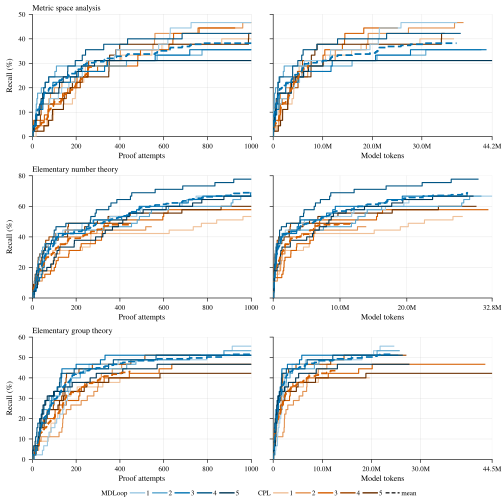

Formal theorem-proving benchmarks hand the system a statement and ask for a proof. A mathematical discovery loop faces the decision before that: with no statement supplied, which propositions are worth proving? We introduce MathLoopBench, which measures this decision as target-blind theorem recovery. A loop starts from a small Lean 4 seed library and grows it under a fixed budget; a scorer rechecks every submitted theorem and reports the fraction of a hidden set of targets the loop recovered, against both proof attempts and model tokens. The score belongs to the whole loop, its conjecturing, proving, and orchestration, not to proof generation alone.
The gap is large: the same prover solves 92.6% of the targets at solve@16 when handed their statements, while our reference loop, MDLoop, recovers 53.0% after 1000 attempts. This motivates improving conjecturing and orchestration. Under one contract, two different loops, MDLoop and CPL, are compared run by run over five seeds per domain. Still, across their runs, the two loops recover eight of the ten targets the prover missed when handed the statements.
Given each target statement, the prover solves 92.6% of them. Left to choose its own statements, MDLoop as a whole recovers 53.0%, despite many more attempts. The loop proves plenty, but mostly not what the targets contain: on average, an MDLoop run proves 132, 411, and 297 theorems in analysis, number theory, and group theory, but only 13.0%, 7.6%, and 7.8% of them are matched to a target.
Recall (%) at 1000 attempts: MDLoop, mean of five seeds; CPL, mean of the runs that completed (3, 3, and 2 of 5). Error bars: ±1 SD (CPL in group theory: the two runs). Prover w/ statement: up to 16 attempts per target; 151, 211, and 257 used per domain.
Under the same accounting, neither loop wins everywhere: MDLoop leads in number theory and group theory, CPL in analysis. Spending more tokens does not mean recovering more, and CPL's choice to keep its whole library in the prompt ends 7 of its 15 runs early. With only five seeds per domain, and fewer completed CPL runs, these differences are best read as directional, not as exact magnitudes.

| Loop | Final | Tokens | R@250 | R@500 | R@750 | R@Final |
|---|---|---|---|---|---|---|
| Metric space analysis | ||||||
| CPL | 840 | 28.3M | 25.8 | 35.64 | 40.04 | 40.9 |
| CPL1000 | 10003 | 36.4M3 | 26.73 | 35.63 | 39.33 | 43.03 |
| MDLoop | 1000 | 40.8M | 30.2 | 33.8 | 37.8 | 38.2 |
| Elementary number theory | ||||||
| CPL | 799 | 23.3M | 41.3 | 48.34 | 54.13 | 53.3 |
| CPL1000 | 10003 | 30.3M3 | 38.53 | 49.63 | 54.13 | 57.03 |
| MDLoop | 1000 | 30.7M | 45.3 | 59.1 | 65.3 | 69.3 |
| Elementary group theory | ||||||
| CPL | 761 | 29.4M | 36.9 | 42.84 | 46.73 | 45.3 |
| CPL1000 | 10002 | 43.8M2 | 37.82 | 41.12 | 44.42 | 44.42 |
| MDLoop | 1000 | 25.9M | 43.6 | 48.4 | 49.8 | 51.6 |
Means over five seeds, or over fewer runs where a subscript gives the count. Final: terminal proof attempts. Tokens: cumulative conjecturer and prover tokens. R@N: recall (%) after N attempts. CPL1000 averages the runs that completed 1000 attempts. Averaged over only the seeds on which CPL completed 1000 attempts, the difference between MDLoop and CPL1000 at 1000 attempts is −5.2, +10.4, and +4.4 points in analysis, number theory, and group theory.
| Loop | Seed | Final | Tokens | R@250 | R@500 | R@750 | R@Final |
|---|---|---|---|---|---|---|---|
| Metric space analysis | |||||||
| CPL | 1 | 1000 | 36.4M | 31.1 | 33.3 | 37.8 | 40.0 |
| CPL | 2 | 1000 | 38.3M | 24.4 | 35.6 | 42.2 | 46.7 |
| CPL | 3 | 924 | 25.0M | 24.4 | 35.6 | 42.2 | 44.4 |
| CPL | 4 | 274 | 7.3M | 24.4 | N/A | N/A | 31.1 |
| CPL | 5 | 1000 | 34.5M | 24.4 | 37.8 | 37.8 | 42.2 |
| MDLoop | 1 | 1000 | 37.0M | 31.1 | 35.6 | 46.7 | 46.7 |
| MDLoop | 2 | 1000 | 41.9M | 28.9 | 31.1 | 33.3 | 35.6 |
| MDLoop | 3 | 1000 | 42.9M | 26.7 | 31.1 | 35.6 | 35.6 |
| MDLoop | 4 | 1000 | 37.7M | 35.6 | 40.0 | 42.2 | 42.2 |
| MDLoop | 5 | 1000 | 44.2M | 28.9 | 31.1 | 31.1 | 31.1 |
| Elementary number theory | |||||||
| CPL | 1 | 1000 | 28.3M | 33.3 | 42.2 | 46.7 | 53.3 |
| CPL | 2 | 543 | 13.8M | 42.2 | 44.4 | N/A | 46.7 |
| CPL | 3 | 1000 | 32.1M | 35.6 | 51.1 | 57.8 | 57.8 |
| CPL | 4 | 450 | 11.8M | 48.9 | N/A | N/A | 48.9 |
| CPL | 5 | 1000 | 30.3M | 46.7 | 55.6 | 57.8 | 60.0 |
| MDLoop | 1 | 1000 | 32.8M | 48.9 | 57.8 | 66.7 | 66.7 |
| MDLoop | 2 | 1000 | 31.1M | 44.4 | 53.3 | 60.0 | 66.7 |
| MDLoop | 3 | 1000 | 29.1M | 46.7 | 60.0 | 64.4 | 68.9 |
| MDLoop | 4 | 1000 | 30.6M | 48.9 | 68.9 | 73.3 | 77.8 |
| MDLoop | 5 | 1000 | 29.9M | 37.8 | 55.6 | 62.2 | 66.7 |
| Elementary group theory | |||||||
| CPL | 1 | 588 | 19.5M | 35.6 | 40.0 | N/A | 40.0 |
| CPL | 2 | 448 | 12.9M | 28.9 | N/A | N/A | 46.7 |
| CPL | 3 | 1000 | 43.0M | 37.8 | 42.2 | 46.7 | 46.7 |
| CPL | 4 | 767 | 27.0M | 44.4 | 48.9 | 51.1 | 51.1 |
| CPL | 5 | 1000 | 44.5M | 37.8 | 40.0 | 42.2 | 42.2 |
| MDLoop | 1 | 1000 | 24.5M | 44.4 | 48.9 | 48.9 | 55.6 |
| MDLoop | 2 | 1000 | 25.6M | 44.4 | 48.9 | 51.1 | 53.3 |
| MDLoop | 3 | 1000 | 25.3M | 46.7 | 51.1 | 51.1 | 51.1 |
| MDLoop | 4 | 1000 | 26.3M | 44.4 | 48.9 | 51.1 | 51.1 |
| MDLoop | 5 | 1000 | 27.6M | 37.8 | 44.4 | 46.7 | 46.7 |
The prover misses ten targets even when given the statements, eight of them Level 3 targets. Across five runs each, the two loops together recover eight of them: CPL seven, MDLoop six. The prover is the same; what the loops add is the context they accumulate and many more attempts.
The ten targets the prover does not prove within 16 attempts when given the statement. The label beside each recovered target names the loop that recovered it in at least one of its five runs.
The paper received four reviews. The author sincerely thanks all the anonymous reviewers for their time and constructive feedback. Most reviewers found the motivation and idea of the paper interesting, and all of them found it clearly relevant to the focus of the workshop. However, most reviewers pointed out that the experiments are limited. The author agrees and regrets the limited experiments. The results should therefore be read with care. They come from three small, curated target sets and a single pair of models, so they may not carry over to other domains or models, and no ablation isolates which part of a loop accounts for the gap.
The aim is not a loop that scores well here, but one that contributes to mathematics: working from a library as large as Mathlib, it would pose its own questions and prove new results. A natural next step is to roll Mathlib back to an earlier version, hide the theorems added since then, and ask whether a loop rebuilds them; only theorems that the older version can already state and prove would count. This scales the benchmark up, but it still measures rediscovery, and exposure during pretraining would need care. Beyond rediscovery there is no answer key. Lean checks that a proof is valid, not that the result is new or meaningful to the mathematical community; a result missing from a formal library need not be new, and judging novelty and value takes the review of mathematicians.
@inproceedings{gwak2026mathloopbench,
title={MathLoopBench: Evaluating Agentic Mathematical Discovery Loops},
author={Kyeonghwan Gwak},
booktitle={The Sixth Workshop on Mathematical Reasoning and AI},
year={2026}
}